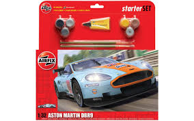
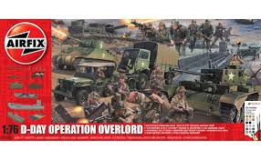
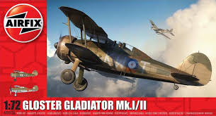
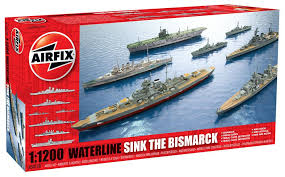

|Home| |The History of Airfix| |Airfix Now| | My Airfix Aircraft Hangar| | How to Make a Model|
Durning the 1970's, Aifix faced a number of problems relating to the oil shortages and worldwide recession. The company was bought by Hornby in 2006, famous for its toy train sets. They completely revived the company, producing new paints and glue, and re-released some of the old iconic models.
Airfix now has a wide range of different kits, suitable for beginners to the more advanced modeller such as;




Here are some examples of Airfix kits that you can buy. There are many more but there are too many to show here!
In October 2009, 'James May's Toy Stories' was broadcast on the BBC. In the first episode, 'Airfix', May and a group of engineers, architects and designers attempted to construct a life- sized model of one of Aifix's most famous models, the Spitfire.
During the programme there were worries that the aircraft would not be strong enough to support its own weight but luckily it held. It is displayed in RAF Museum Cosford, which you can see today (when the museum reopens!)
You can watch the episode below;
If you are interested in Airfix models, visit the company's official website